Energy Compass — przewodnik po stanach i strategiach
English · Polski
Przewodnik opisuje działanie Energy Compass, wszystkie stany, jakie mogą zgłaszać jego encje, warunki, w których każdy stan występuje, oraz sześć strategii dyspozycji. Dotyczy wersji 0.1.25. Matematyczny kontrakt każdej reguły opisuje model i ograniczenia (EN), a instalację i dashboardy — przewodnik instalacji (EN).
Energy Compass jest doradczy. Liczy plan i publikuje go jako encje Home Assistant. Nigdy nie zapisuje rejestrów falownika i sam nie wysyła powiadomień; o wykonaniu planu decydują sterowniki i blueprinty powiadomień.
Spis treści
- Jak to działa
- Przegląd encji
- Stan optymalizatora — cykl obliczeń
- Alert i poprawność prognozy
- Tryby pracy — planowany stan baterii
- Poziomy zużycia — BOOST, CHEAP, NORMAL, LIMIT
- Okna i głębokość elastycznego zużycia
- Strategie dyspozycji
- Automatyczne przełączanie strategii
- Słownik kodów powodów
Jak to działa
Każde obliczenie przebiega tak:
- Migawka i walidacja wejść. Ceny, prognoza PV, prognoza zużycia (z historii recordera), SOC baterii i liczniki dzienne są odczytywane i sprawdzane pod kątem świeżości, jednostek i wiarygodności.
- Budowa problemu. Natywne sloty taryfowe (zwykle 15 min) w horyzoncie planowania (domyślnie 24 h), limity sprzętu, granice SOC, przeniesione zobowiązanie trybu pracy i aktywny pakiet strategii.
- Rozwiązanie planu bazowego. Mieszany program liniowy minimalizuje koszt (plus wagi strategii) przy ograniczeniach bilansu energii, baterii, sieci, minimalnego czasu trybu i polityk eksportu/ładowania. Publikowane jest wyłącznie udowodnione optimum.
- Próby zużycia. Dla każdego przedziału wyświetlania solver liczy plan jeszcze raz z dodatkowym 1 kWh obciążenia; różnica kosztu to koszt krańcowy jednej kWh więcej, klasyfikowany na poziom zużycia.
- Profile elastycznego zużycia. Osobne rozwiązania dla bloków 3, 5, 10, 15 i 20 kWh mierzą, ile elastycznej energii można zaplanować, zanim cena się pogorszy.
- Publikacja. Jedna spójna generacja aktualizuje wszystkie encje; niezmienione encje nie są zapisywane ponownie.
Kadencja przeliczeń
- Okresowo:
refresh_minutes(domyślnie 15, maks. 60), wyrównane do zegara. - Na zmianę wejść: najwyżej raz na
minimum_replan_seconds(domyślnie 900 s,0wyłącza), dopóki istnieje ważny plan; SOC liczy się jako zmieniony dopiero po przesunięciu osoc_trigger_percent(domyślnie 5 %) od wartości, która uruchomiła ostatnie obliczenie. - Granice slotów: na każdej natywnej granicy rozliczeniowej istniejący plan przesuwa się (zużyte wiersze znikają, zegary trybów biegną) bez uruchamiania solvera.
- Ważność planu: nowy plan jest ważny do
generated_at + 2 × refresh_minutes, nie dłużej niż pokrycie prognozy.
Przegląd encji
<name> to tytuł wpisu integracji.
| Encja | Nazwa EN | Nazwa PL | Stan |
|---|---|---|---|
sensor.<name>_consumption_compass |
Consumption compass | Kompas zużycia | BOOST / CHEAP / NORMAL / LIMIT |
sensor.<name>_consumption_cost |
Consumption cost | Koszt zużycia | waluta/kWh za jedną kWh więcej teraz |
sensor.<name>_flexible_energy_depth |
Flexible energy depth | Głębokość elastycznego zużycia | kWh |
sensor.<name>_next_change |
Next change | Następna zmiana | znacznik czasu następnej zmiany poziomu |
sensor.<name>_next_boost_start |
Next boost start | Początek zwiększonego zużycia | znacznik czasu |
sensor.<name>_next_cheap_start |
Next cheap start | Początek taniego okresu | znacznik czasu |
sensor.<name>_next_limit_start |
Next limit start | Początek ograniczenia | znacznik czasu |
sensor.<name>_energy_compass |
Energy compass | Kompas energii | jeden z sześciu trybów pracy |
sensor.<name>_plan |
Plan | Plan | czas generacji + pełne atrybuty planu |
sensor.<name>_expected_net_cost |
Expected net cost | Przewidywany koszt netto | waluta w horyzoncie |
sensor.<name>_expected_wear_cost |
Expected wear cost | Przewidywany koszt zużycia baterii | waluta w horyzoncie |
sensor.<name>_optimizer_status |
Optimizer status | Stan optymalizatora | stan obliczeń (diagnostyczny) |
sensor.<name>_battery_balance |
Battery balance | Balansowanie baterii | ok / eligible / scheduled / holding / overdue (diagnostyczny) |
binary_sensor.<name>_forecast_valid |
Forecast valid | Poprawna prognoza | on / off |
binary_sensor.<name>_alert |
Alert | Alert | on / off (diagnostyczny, problem) |
select.<name>_strategy |
Strategy | Strategia | jedna z sześciu strategii |
Sensory kosztów można wyłączyć opcją Prezentacja → Włącz encje kosztów, znaczniki okien —
Włącz encje okresów, a głębokość elastycznego zużycia — Prognoza kosztu zużycia → Włącz
głębokość elastycznego zużycia. Balansowanie baterii jest domyślnie wyłączone i włącza się je
ustawieniem LFP balance; jego atrybuty to last_completed, next_due, days_overdue,
planned_start, planned_end, planned_mode, hold_progress_minutes, hold_required_minutes
i threshold_percent.
Reguła dostępności
Stan optymalizatora — cykl obliczeń
| Stan | Etykieta EN / PL | Kiedy występuje | Co pozostaje opublikowane |
|---|---|---|---|
ready |
Ready / Gotowy | Ostatnie obliczenie dało udowodnione optimum planu bazowego i zostało opublikowane. | Nowy plan. ready nie gwarantuje pełnego pokrycia odniesienia — sprawdź reason. |
calculating |
Calculating / Obliczanie | Obliczenie czeka w kolejce lub trwa. reason mówi dlaczego: inputs_changed (zmiana wejść), interval_boundary (termin odświeżenia okresowego), inputs_recovered (wejścia wróciły), calculating (worker wystartował), soc_rebase_pending (skok SOC w górę czeka na potwierdzenie). |
Poprzedni plan, dopóki pokrywa bieżący czas, z refreshing: true. Istniejący alert pozostaje włączony. |
invalid_input |
Invalid input / Niepoprawne dane | Brak wymaganego źródła, unavailable, dane nieaktualne, zła jednostka, wartość poza zakresem, SOC niezgodny z BMS lub skok SOC, liczniki dzienne z poprzedniego dnia, błędne ustawienia; także no_current_interval i expired_inputs, gdy zachowany plan już nie pokrywa bieżącego czasu. |
Poprzedni plan, dopóki pokrywa bieżący czas (plan_retained: true); w przeciwnym razie nic. |
timeout |
Timeout / Przekroczony czas | Rozwiązanie bazowe przekroczyło solve_time_limit_s (domyślnie 10 s) albo worker przekroczył total_time_limit_s + 1 (powód worker_deadline). |
Poprzedni plan w jego pokryciu. |
infeasible |
Infeasible / Brak rozwiązania | Solver udowodnił, że żaden plan nie spełnia wszystkich twardych ograniczeń (np. rezerwa SOC, reguła końcowa, przeniesione zobowiązanie trybu, deficyt Sell only PV, limity sieci). | Poprzedni plan w jego pokryciu. |
error |
Error / Błąd | Każdy inny błąd solvera lub nieoczekiwany wyjątek; reason zawiera powód solvera lub klasę wyjątku. |
Poprzedni plan w jego pokryciu. |
insufficient_data |
Insufficient data / Za mało danych | Zarezerwowany w tłumaczeniach; nie jest emitowany przez obecny koordynator — brak danych daje invalid_input. |
— |
Atrybuty: last_calculation_started_at, calculations_since_load,
expired_previous_generated_at. Diagnostyka dodaje calculations_last_hour i
calculations_last_24h.
Wyniki wyprzedzone
Jeśli wejścia zmienią się w trakcie obliczeń, gotowy wynik i tak zostanie opublikowany, gdy zmieniły się tylko wejścia (nie konfiguracja) — jest świeższy niż zachowany plan — a potem rusza nowe obliczenie. Zmiany konfiguracji, rejestru i błędne wejścia odrzucają wynik w toku.
Alert i poprawność prognozy
Poprawna prognoza (binary_sensor.<name>_forecast_valid)
| Stan | Warunek |
|---|---|
on |
Istnieje opublikowany plan i now < valid_until. Obowiązuje także w trakcie ponownych prób i gdy zachowany plan wciąż pokrywa bieżący czas. |
off |
Brak planu albo skończyło się jego pokrycie/ważność. Rekomendacje stają się niedostępne. |
Atrybut current_guidance_valid ma wartość true tylko wtedy, gdy próba zużycia dla bieżącego
przedziału dała znany poziom. Pozostałe atrybuty: coverage_end, requested_end,
coverage_complete, input_ages, missing_sources, load_quality.
Alert (binary_sensor.<name>_alert)
code |
EN / PL | Warunek |
|---|---|---|
invalid_input |
Invalid input / Nieprawidłowe dane wejściowe | Dowolny błąd walidacji wejść (patrz stan optymalizatora). |
soc_measurement_jump |
SOC measurement jump / Skok wskazania SOC | Między dwoma odczytami SOC zmienił się o więcej niż moc baterii × upływ czasu + soc_jump_percent (domyślnie 2 %) pojemności. Skok w dół — alert od razu; skok w górę (rekalibracja BMS przy pełnej baterii) najpierw daje calculating/soc_rebase_pending, a alert tylko gdy nie zostanie potwierdzony w 300 s. Wyjście z alertu wymaga świeżych, wiarygodnych odczytów obejmujących ≥ 60 s. |
timeout |
Calculation timeout / Przekroczony czas obliczeń | Przekroczony limit solvera lub workera. |
infeasible |
No feasible plan / Brak wykonalnego planu | Żaden plan nie spełnia twardych ograniczeń. |
error |
Calculation error / Błąd obliczeń | Inny błąd. |
Atrybuty: code, reason, since, plan_retained, last_successful_plan_at. Ponowna próba
nie gasi alertu; gasi go dopiero udany nowy plan.
Zachowanie planu
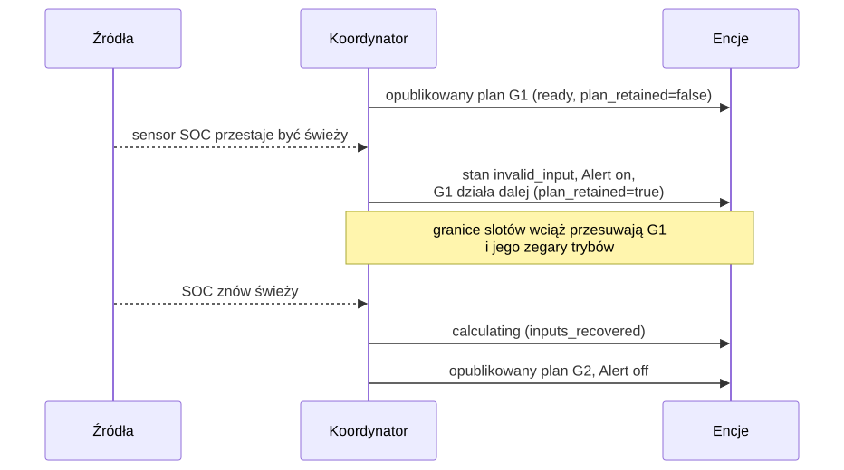
Zachowany plan nigdy nie jest wydłużany poza pierwotne pokrycie i nie przetrwa przeładowania integracji ani restartu Home Assistant.
Tryby pracy — planowany stan baterii
Sensor Kompas energii pokazuje tryb pracy bieżącego przedziału; każdy wiersz atrybutu
intervals planu ma pole dispatch_mode. Trybów jest sześć. Dla przedziału o długości h godzin:
activity = minimum_mode_power_kw × h (domyślnie 0,1 kW) oraz surplus = max(PV − zużycie, 0).
| Tryb | Znaczenie | Występuje, gdy (przepływy fizyczne) | Dozwolony tylko jeśli |
|---|---|---|---|
CHARGE_GRID |
Ładowanie z sieci | Ładowanie ≥ nadwyżka PV + activity — ładuje się więcej, niż daje nadwyżka PV, więc baterię zasila sieć. Bez rozładowania i ograniczania PV. | allow_grid_charge włączone; cena ≤ sufit ceny ładowania z sieci, gdy ten limit jest włączony. |
CHARGE_PV |
Ładowanie z PV | activity ≤ ładowanie ≤ nadwyżka — ładuje tylko nadwyżka słoneczna. Bez rozładowania i ograniczania PV. | Jest nadwyżka PV. |
DISCHARGE_GRID |
Rozładowanie z eksportem | Rozładowanie ≥ activity i eksport do sieci ≥ activity — bateria sprzedaje energię. | allow_battery_export włączone; moc eksportu > 0; pozwala na to budżet Sell only PV i próg korzyści eksportu. |
SELF_CONSUME |
Autokonsumpcja | Rozładowanie ≥ activity, bez ładowania, eksportu i ograniczania — bateria zasila dom. | SOC powyżej rezerwy operacyjnej. |
HOLD |
Wstrzymanie | Brak ładowania, rozładowania i ograniczania — bateria stoi; dom zasila sieć/PV. | Zawsze dostępny. |
CURTAIL |
Ograniczanie PV | Ograniczenie produkcji ≥ activity, bateria nieaktywna. | allow_curtailment włączone. |
Przy wyłączonym minimalnym czasie trybu (minimum_mode_minutes = 0) stan wyświetlany wynika z
przepływów wg pierwszeństwa: CURTAIL → CHARGE_GRID → CHARGE_PV → DISCHARGE_GRID → SELF_CONSUME →
HOLD.
Zaplanowane trzymanie balansu LFP nie dodaje osobnego trybu: jego wiersze
korzystają z CHARGE_PV lub CHARGE_GRID i mają balance_hold: true w atrybucie intervals
planu.
Przejścia i minimalny czas trwania
Diagram jest uproszczony — HOLD pokazano jako węzeł centralny: po minimalnym czasie każdy tryb może przejść bezpośrednio w dowolny inny dostępny tryb.
Zasady (domyślnie 60 min, 0,1 kW):
- Każdy nowo rozpoczęty tryb — także HOLD i CURTAIL — trwa co najmniej
minimum_mode_minutes. Tylko końcowy pasywny przebieg HOLD/CURTAIL może być przycięty przez pokrycie prognozy. Koordynator zapisuje przyjęty tryb i jego start; przeliczenie i restart zachowują zegar. - Grupa podążania za PV:
CHARGE_PViSELF_CONSUMEdzielą jeden zegar — w obu falownik ładuje z nadwyżki i pokrywa deficyt z baterii, więc przełączanie między nimi nie jest zmianą trybu. - Każda inna zmiana (źródło, cel, HOLD lub CURTAIL) uruchamia nowy zegar. Bezczynny HOLD nie „odlicza” czasu dla aktywnego przebiegu.
- Pokrycie: nowy aktywny tryb wymaga pełnego minimalnego czasu pokrycia prognozą.
- Wyjątek bezpieczeństwa (pauza, nie reset): w trakcie niewygasłego aktywnego zobowiązania
bieżący wiersz pokazuje HOLD, gdy obserwowany SOC jest już na górnej granicy (tryby ładowania —
observed_soc_maximum) lub na/poniżej rezerwy (tryby rozładowania —observed_soc_minimum), albo gdy przeniesioneCHARGE_GRIDtrafia przed terminem na cenę powyżej sufitu (grid_charge_price_limit). Przerwany tryb i termin pozostają zapisane; przed tym terminem nie może wystartować żaden inny tryb. Widoczne wdispatch_policy.safety_exception. - Zmiana strategii (reset): zapis nowej strategii zrywa przeniesione zobowiązanie dla następnego planu, który startuje bez blokady (patrz zwolnienie przy zmianie strategii).
minimum_mode_minutes = 0wyłącza reguły czasu i minimalnej mocy.
Polityki ograniczające tryby
| Polityka | Domyślnie | Efekt |
|---|---|---|
Sell only PV (limit_export_to_pv, „sprzedawaj tylko PV”) |
włączona | W każdej dobie lokalnej: eksport ≤ produkcja PV (zaobserwowana od północy + prognoza). Wymaga liczników pv_energy_today i grid_export_energy_today. |
Limit ceny ładowania z sieci (limit_grid_charge_price, maximum_grid_charge_price) |
wyłączony | CHARGE_GRID tylko przy cenie zakupu ≤ sufit przez cały minimalny czas trybu. |
Minimalna korzyść eksportu (minimum_export_episode_benefit) |
1 jednostka waluty | Każdy dodatkowy okres eksportu z baterii musi poprawić koszt całego horyzontu co najmniej o tę kwotę. 0 wyłącza. |
Minimalna korzyść epizodu ładowania z sieci (minimum_grid_charge_episode_benefit) |
0 (wył.) | Ten sam próg dla nowych okresów ładowania z sieci; skupia ładowanie w mniej epizodów. |
Kara za import (import_penalty_per_kwh) |
0 | Planistyczna cena cienia za każdą importowaną kWh, w każdej strategii. |
Pobór czuwania falownika (idle_drain_kw) |
0 (wył.) | Stały ubytek energii baterii modelowany w każdym przedziale. |
Reguła końcowa (terminal_mode) |
preserve_initial |
SOC na końcu ≥ SOC na starcie, albo value: energia na końcu wyceniana po terminal_value_per_kwh. |
Poziomy zużycia — BOOST, CHEAP, NORMAL, LIMIT
Kompas zużycia odpowiada na pytanie: „jak opłacalne jest zużycie jednej kWh więcej w tym
przedziale?”. Dla każdego przedziału wyświetlania (domyślnie 60 min w horyzoncie 24 h) solver
liczy plan z dodatkowym obciążeniem probe_kwh (domyślnie 1 kWh). Koszt zużycia = (koszt planu
z próbą − koszt planu bazowego) ÷ dodana energia. Bateria i sieć są przy tym optymalizowane od
nowa, więc to prawdziwy koszt krańcowy — może różnić się od ceny taryfowej (np. energia z PV,
którą inaczej by sprzedano, kosztuje utraconą wartość eksportu).
| Poziom | EN / PL | Warunek | Typowa sytuacja |
|---|---|---|---|
BOOST |
Boost / Zwiększone zużycie | Koszt ściśle poniżej boost_ceiling (domyślnie 0,01 waluty/kWh). |
Energia darmowa lub ujemna: nadwyżka PV, której nie da się zmagazynować ani sprzedać, ujemne ceny. Włączaj, co się da. |
CHEAP |
Cheap / Tanio | Nie BOOST, a koszt ≤ cheap_percentile (domyślnie 25.) kosztów odniesienia lub ≤ minimalna taryfa zakupu w horyzoncie odniesienia. |
Jedne z najtańszych godzin okna odniesienia. Dobry czas na odbiorniki elastyczne. |
LIMIT |
Limit / Ograniczenie | Koszt ściśle powyżej zarówno limit_floor (domyślnie 1 waluty/kWh), jak i limit_percentile (domyślnie 75.). |
Drogi szczyt — dodatkowe zużycie wymusza drogi import albo traci cenny eksport. Odłóż. |
NORMAL |
Normal / Normalnie | Wszystko pozostałe. | Warunki przeciętne. |
| nieznany | — | Próba nieudana lub zabrakło czasu, albo przedział jest poza pokryciem prognozy. | Encja niedostępna; późniejsze okna mogą być znane. |
Percentyle liczone są z udanych prób w całym horyzoncie odniesienia (domyślnie 24 h) z interpolacją
liniową. Gdy nie powiedzie się pełna próba odniesienia, decyduje short_coverage:
absolute_fallback (domyślnie: zostają bezwzględne reguły BOOST/LIMIT i reguła CHEAP wg minimalnej
taryfy) albo unavailable.
Okna i głębokość elastycznego zużycia
Okna
Sąsiednie przedziały tego samego poziomu łączą się w okna. next_boost_start, next_cheap_start
i next_limit_start pokazują początek aktywnego lub następnego okna danego typu; next_change —
następny znany, inny poziom.
Atrybut status |
Warunek |
|---|---|
active |
Początek okna ≤ teraz < koniec. |
upcoming |
Okno zaczyna się później, w pokryciu prognozy. |
none_in_coverage |
Brak takiego okna w prognozie; encja niedostępna. |
start_basis ma wartość forecast albo first_observed, gdy już aktywne okno zachowuje pierwszy
zaobserwowany początek mimo przeliczeń i restartów. next_change zatrzymuje się na nieznanym
pokryciu zamiast zgadywać.
Głębokość elastycznego zużycia
Odpowiada na pytanie: „ile energii odkładalnej mogę tanio zużyć?”. Solver niezależnie rozmieszcza
bloki 3, 5, 10, 15 i 20 kWh z mocą do flexible_load_max_power_kw (domyślnie 3 kW).
| Status profilu | Warunek |
|---|---|
ANCHOR |
Profil 3 kWh; jego średni koszt krańcowy to cena kotwicy. |
STABLE |
Krańcowy koszt bloku ≤ kotwica + flexible_price_degradation_percent (domyślnie 15 %) z |kotwicy|. |
DEGRADED |
Krańcowy koszt bloku powyżej progu — zatrzymuje publikowaną głębokość. |
UNKNOWN |
Nie policzono: insufficient_time (blok nie zmieści się przy maks. mocy w horyzoncie), timeout lub powód solvera. Zatrzymuje głębokość. |
Grupy: small (3/5 kWh), medium (10/15 kWh), large (20 kWh).
Strategie dyspozycji
select.<name>_strategy wybiera pakiet funkcji celu, którego używa solver. Każda strategia
zachowuje wszystkie twarde ograniczenia fizyczne; strategie zmieniają wyłącznie wagi
planistyczne i niewielki zestaw flag polityk. Raportowane koszty (expected_net_cost, koszt
zużycia) zawsze są w prawdziwej walucie — kary strategii nigdy się w nich nie pojawiają.
| Strategia | Etykieta EN / PL | Cel | Typowe użycie |
|---|---|---|---|
cost_min |
Cost minimisation / Minimalizacja kosztów | Najniższy koszt całkowity | Domyślna, na co dzień |
self_sufficiency |
Self-sufficiency / Samowystarczalność | Najmniej kWh z sieci | Płaskie ceny, preferencja niezależności, ceny zerowe/ujemne |
backup_ready |
Backup ready / Gotowość awaryjna | Duża rezerwa w baterii | Ostrzeżenie burzowe, planowana przerwa, zima |
pv_swap |
PV swap / Zamiana energii PV | Kup tanio w nocy, sprzedaj własne PV później | Mała zimowa produkcja PV i wyższa cena wieczorem |
max_export |
Maximum export / Maksymalny eksport | Arbitraż bez ograniczeń | Okna wysokich cen sprzedaży |
grid_friendly |
Grid friendly / Przyjazna dla sieci | Spłaszczenie szczytów importu/eksportu | Taryfy mocowe, słabe przyłącze |
Co zmienia każda strategia
Solver minimalizuje
grid = Σ ( import_weight × buy × import + import_kwh_weight × import
− export_weight × (sell − pv_export_margin) × export )
+ battery_export_penalty_per_kwh × battery_export
autonomy = soc_target_weight × Σ (najgłębszy niedobór w oknie poniżej progu autonomii)
peak = peak_import_weight × max(moc importu)
caps = cap_violation_weight × Σ (import/eksport ponad miękkie limity)
objective = grid + wear + progi epizodów + autonomy + peak + caps − terminal credit
| Strategia | Próg autonomii | Sprzedawaj tylko PV | Sufit ceny ładowania z sieci | Próg korzyści eksportu | Wagi |
|---|---|---|---|---|---|
cost_min |
wył. | ustawienie użytkownika | ustawienie użytkownika | ustawienie użytkownika | domyślne (tylko import_penalty_per_kwh) |
self_sufficiency |
wł. | ustawienie użytkownika | ustawienie użytkownika | ustawienie użytkownika | import_kwh_weight = max(5,0; max |cena zakupu| + 0,50; kara za import); kara za eksport z baterii 0,20/kWh |
backup_ready |
wł., próg ≥ 80 % pojemności | ustawienie użytkownika | ustawienie użytkownika | ustawienie użytkownika | waga progu ≥ 2,0/kWh |
pv_swap |
wł. | wymuszone wł. | wymuszone wył. | ustawienie użytkownika | cena sprzedaży obniżona o marżę 0,05/kWh |
max_export |
wył. | wymuszone wył. | wymuszone wył. | wymuszone 0 | domyślne |
grid_friendly |
wył. | ustawienie użytkownika | ustawienie użytkownika | ustawienie użytkownika | szczyt importu 0,50/kW, przekroczenie miękkiego limitu 2,0/kWh |
„Ustawienie użytkownika” oznacza, że strategia zostawia opcję tak, jak ją skonfigurowano.
Wartości wymuszone działają tylko dla opcji, których użytkownik nie ustawił jawnie: każda
opcja należąca do strategii, która różni się od wartości fabrycznej, trafia do
explicit_strategy_fields i pakiet nigdy jej nie nadpisuje.
Wszystkie liczby powyżej to domyślne wartości opcji Planowania:
self_sufficiency_import_price_per_kwh (5,0), self_sufficiency_export_penalty_per_kwh (0,20),
backup_target_soc_percent (80), backup_shortfall_price_per_kwh (2,0),
pv_swap_margin_per_kwh (0,05), peak_import_price_per_kw (0,50),
cap_violation_price_per_kwh (2,0), grid_friendly_import_cap_kw / _export_cap_kw (0 = limit
przyłącza), autonomy_margin_per_kwh (0,10).
Próg autonomii (używany przez self_sufficiency, backup_ready, pv_swap)
Próg pyta: czy bateria przeprowadzi dom przez następny okres, w którym zużycie przewyższa PV? Horyzont dzielony jest na okna wg skumulowanej nadwyżki netto; w każdym oknie cel wynosi
soc_target[t] = min(pojemność użyteczna, rezerwa + (1 / η_rozładowania) × Σ deficytu do końca okna)
Najgłębszy niedobór poniżej celu jest liczony raz na okno z wagą soc_target_weight =
oczekiwana cena nocnego odkupu (mediana nocnych cen zakupu) + autonomy_margin_per_kwh. Próg
patrzy 48 h do przodu na prognozy PV/zużycia, nawet zanim zostaną opublikowane jutrzejsze ceny.
Jest miękki: naruszenie trafia do autonomy_shortfall_kwh planu zamiast dawać brak rozwiązania.
Wymaga źródła PV (inaczej autonomy_floor_requires_pv).
Balansowanie LFP
Pakiety LFP potrzebują okresowego pełnego naładowania i krótkiego przetrzymania na górze, aby BMS
mógł zbalansować cele i ponownie wyzerować odczyt SOC. Przy włączonej opcji Okresowe
balansowanie LFP (lfp_balance) Energy Compass śledzi ostatnio zakończony balans i planuje
następny. Sam licznik dalej obserwuje SOC i przesuwa swój stan nawet przy wyłączonym
lfp_balance — ustawienie włącza tylko publikowanie okien balansu i encji diagnostycznej.
| Ustawienie | Domyślnie | Znaczenie |
|---|---|---|
balance_interval_days |
7 | Dni między zakończonymi balansami |
balance_hold_minutes |
60 | Minuty, które SOC musi utrzymać na/ponad progiem |
balance_soc_threshold |
99 % | SOC uznawany za pełny |
balance_value |
5,0 | Wartość zbalansowania w dniu terminu |
Balans kończy się, gdy SOC utrzymuje się na/ponad progiem przez cały czas trzymania. Odczyt
poniżej progu resetuje trzymanie; niedostępny SOC wstrzymuje je. Zakończenie jest oceniane
leniwie — niezmieniony pełny SOC kończy trzymanie przy najbliższym sprawdzeniu, bez potrzeby
kolejnego zdarzenia stanu. Fazy: ok → eligible (wcześniejsze z: 2 dni lub pół odstępu przed
terminem) → due; holding nakłada się na aktywną fazę podczas trwania trzymania.
Optymalizator może wybrać jedno okno trzymania wyrównane do pełnej godziny: kandydujące okna
zaczynają się tylko o pełnej godzinie, a w fazie due — tylko w ciągu następnych 24 h (faza
eligible może szukać w całym horyzoncie). W wybranym oknie SOC utrzymuje się na/ponad progiem, a
bateria się nie rozładowuje. Pominięcie kosztuje 10 % balance_value w fazie eligible (używana
jest tylko darmowa PV), balance_value × (1 + dni po terminie) w fazie due i 10 × balance_value
podczas trzymania. Okno jest publikowane jako CHARGE_PV, gdy PV pokrywa zużycie w każdym jego
przedziale, albo jako CHARGE_GRID dla okna mieszanego PV/sieć — co dodatkowo wymaga, aby
ładowanie z sieci było dozwolone i (jeśli włączony) sufit ceny ładowania z sieci był
zachowany — z balance_hold: true w każdym wierszu. Od przedziału przed najwcześniejszym
kandydującym oknem do końca horyzontu energia baterii może wzrosnąć aż do pełnej pojemności, a nie
tylko do skonfigurowanego sufitu SOC, więc trzymanie nie jest blokowane przez soc_ceiling poniżej
100 % — to podniesienie ma znaczenie tylko wtedy, gdy sufit jest poniżej 100 %. Próby zużycia
utrzymują wybrane okno bez zmian, aby dodatkowe obciążenie wyceniało zużycie, a nie wybór balansu.
Diagnostyczny sensor Balansowanie baterii (sensor.<name>_battery_balance) zgłasza ok,
eligible, scheduled, holding lub overdue, z atrybutami last_completed, next_due,
days_overdue, planned_start, planned_end, planned_mode, hold_progress_minutes,
hold_required_minutes, threshold_percent.
cost_min — minimalizacja kosztów
- Cel: najniższy prognozowany koszt: zakupy − sprzedaż + zużycie baterii − wartość końcowa.
- Zmiany: żadne; bajt w bajt ten sam model co bazowy, gdy
import_penalty_per_kwh = 0. - Zachowanie: ładuje, gdy energia jest tania (z sieci lub PV), rozładowuje w drogich godzinach, eksportuje tylko gdy różnica cen pokrywa straty, zużycie baterii i próg korzyści eksportu.
- Wybierz, gdy: normalna praca na co dzień; to strategia domyślna i awaryjna w blueprincie.
- Uwaga: bez rezerwy autonomii może zostawić baterię nisko przed pozornie tanią nocą, jeśli prognoza się myli.
self_sufficiency — samowystarczalność
- Cel: minimalizacja kWh z sieci, nie pieniędzy.
- Zmiany: każda importowana kWh kosztuje co najmniej
max(5,0; najwyższa |cena zakupu| + 0,50; import_penalty_per_kwh), więc import zawsze dominuje nad różnicami cen; eksport z baterii kosztuje dodatkowo 0,20/kWh; próg autonomii włączony. - Zachowanie: ładuje baterię z PV, unika ładowania z sieci i eksportu z baterii, trzyma energię na następne okno deficytu.
- Wybierz, gdy: różnica cen dzień/noc jest mała (blueprint wybiera ją przy różnicy poniżej 0,15 PLN/kWh), ceny są zerowe lub ujemne, albo niezależność jest ważniejsza niż koszt.
- Uwaga: raportowane koszty są prawdziwe — ta strategia może kosztować więcej niż
cost_min.
backup_ready — gotowość awaryjna
- Cel: utrzymać dużą rezerwę na wypadek awarii sieci.
- Zmiany: próg autonomii włączony i podniesiony do co najmniej
backup_target_soc_percent(80 %) pojemności; jego waga wynosi co najmniejbackup_shortfall_price_per_kwh(2,0/kWh). - Zachowanie: doładowuje do ok. 80 % i nie schodzi niżej, chyba że niedobór jest wart więcej niż 2,0/kWh; próg jest miękki, więc plan zawsze istnieje.
- Wybierz, gdy: ostrzeżenia burzowe lub o przerwach w dostawie, planowane prace, mroźne noce.
Reguła
alertblueprintu wybiera ją, gdy Twoja encja alertu jest włączona. - Uwaga: połączenie z niskim sufitem ceny ładowania z sieci daje ostrzeżenie
grid_charge_ceiling_below_autonomy_weight— próg mógłby zostać opróżniony, ale nigdy uzupełniony.
pv_swap — zamiana energii PV
- Cel: w sezonie niskiej produkcji kupić tanio w nocy i sprzedać rzeczywistą dzienną produkcję PV później, po wyższej cenie.
- Zmiany: od każdej ceny sprzedaży odejmowana jest marża
pv_export_margin(0,05/kWh) — eksport musi pobić nocny zakup co najmniej o nią; Sell only PV wymuszone (dzienny eksport ≤ dzienna produkcja PV); sufit ceny ładowania z sieci wymuszony wył. (nocne ładowanie nie jest blokowane); próg autonomii włączony. - Zachowanie: ładuje z sieci w nocy, dzienne PV pokrywa dom, wieczorem w szczycie eksportuje do wysokości dziennej produkcji PV.
- Wybierz, gdy: jutrzejsza prognoza PV jest mniejsza niż dzienne zużycie i
wieczorna cena sprzedaży × sprawność cyklu ≥ nocna cena zakupu + marża(regułapv_swapblueprintu). - Uwaga: Sell only PV liczy energię, nie jej pochodzenie — eksport z baterii jest ograniczony łącznie do dziennej produkcji PV, bez śledzenia źródła.
max_export — maksymalny eksport
- Cel: czysty arbitraż, maksymalny przychód z eksportu.
- Zmiany: próg korzyści eksportu wymuszony na 0, Sell only PV wymuszone wył. (energię z sieci można odsprzedać), sufit ceny ładowania z sieci wymuszony wył., próg autonomii wyłączony.
- Zachowanie: ładuje, gdy zakup jest tani, rozładowuje do sieci, gdy różnica pokrywa straty i zużycie baterii; może robić kilka epizodów eksportu dziennie.
- Wybierz, gdy: wyjątkowe ceny sprzedaży, taryfa nagradzająca eksport.
- Uwaga: najwięcej cykli baterii; sprawdź, czy umowa pozwala odsprzedawać energię z sieci. Nigdy nie jest wybierana automatycznie.
grid_friendly — przyjazna dla sieci
- Cel: spłaszczyć profil sieci — unikać wysokich szczytów importu i ograniczyć moc eksportu.
- Zmiany: składnik szczytu importu
peak_import_price_per_kw(0,50/kW najwyższej mocy importu); miękkie limity importu/eksportugrid_friendly_import_cap_kw/grid_friendly_export_cap_kw(0 = limit przyłącza), każda kWh ponad nie kosztujecap_violation_price_per_kwh(2,0); próg autonomii wyłączony. - Zachowanie: rozkłada ładowanie z sieci na dłuższe okna, ścina szczyty importu baterią, utrzymuje eksport poniżej limitu.
- Wybierz, gdy: taryfy mocowe, słabe przyłącze lub zabezpieczenie blisko limitu.
- Uwaga: limity są miękkie; nadmiar trafia do
cap_violation_kwhzamiast błędu. Nigdy nie jest wybierana automatycznie.
Atrybuty planu związane ze strategią
| Atrybut | Znaczenie |
|---|---|
strategy |
Strategia, która wyprodukowała ten plan (może chwilowo różnić się od selecta w trakcie przeliczenia). |
autonomy_shortfall_kwh |
Łączny niedobór poniżej progu autonomii; 0 = próg spełniony. |
cap_violation_kwh |
Łączna energia ponad miękkie limity grid_friendly; 0 = limity spełnione. |
Zwolnienie przy zmianie strategii
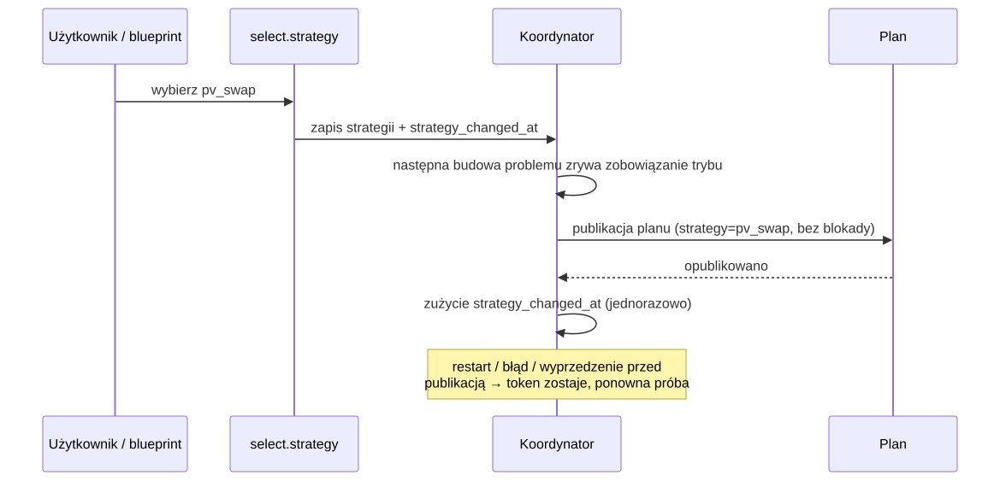
Zmiana strategii to reset: przeniesione zobowiązanie trybu jest zwalniane, aby nowa strategia nie utknęła w minimalnym czasie starego trybu. Trwający epizod eksportu jest zachowany, żeby jego próg nie został naliczony dwa razy.
Automatyczne przełączanie strategii
Opcjonalny blueprint strategy_switch.yaml
wybiera jedną strategię na dobę. Działa o 14:05 (po publikacji cen RCE na następny dzień i
Solcast), ponawia co godzinę do 20:00, jeśli brak cen na jutro, a przy starcie Home Assistant
dokańcza przerwany zapis.
| Parametr | Domyślnie |
|---|---|
| Okno nocne | 22:00–06:00 (najniższa cena zakupu w przedziałach planu) |
| Maks. cena zakupu | najwyższa cena zakupu we wszystkich przedziałach planu |
| Okno wieczorne | 17:00–21:00 (najwyższa cena sprzedaży RCE na jutro) |
| Sprawność cyklu (round-trip) | 0,90 |
| Marża różnicy dla samowystarczalności | 0,15 PLN/kWh |
| Marża zamiany PV | 0,05 PLN/kWh |
| Włączone reguły | alert, pv_swap, self_sufficiency (cost_min to wartość awaryjna) |
Ręczna zmiana selecta blokuje reguły ekonomiczne do następnego udanego uruchomienia
planowego; reguła alertu nigdy nie jest blokowana. max_export i grid_friendly wybiera się
wyłącznie ręcznie. Konfiguracja: przewodnik instalacji
(EN).
Słownik kodów powodów
Powody pokrycia / jakości (atrybuty reason, reasons)
| Kod | Znaczenie |
|---|---|
complete |
Pełne pokrycie odniesienia, wszystkie próby udane. |
available_reference_horizon |
Pokrycie źródeł krótsze niż żądany horyzont odniesienia; percentyle z dostępnych danych. |
reference_horizon_uncovered |
Zarezerwowany w tłumaczeniach; nie jest emitowany w 0.1.25. |
reference_probe_failed |
Co najmniej jedna próba odniesienia nie powiodła się lub zabrakło czasu. |
short_source_coverage |
Pokrycie cen/prognoz kończy się przed żądanym horyzontem planowania. |
current_guidance_unavailable |
Próba dla bieżącego przedziału nieznana; późniejsze okna mogą być poprawne. |
missing_forecast_continuation |
Skonfigurowane źródło nie opublikowało jeszcze danych dla części horyzontu (np. jutrzejsze ceny przed ok. 14:00). |
load_history_fallback |
Część prognozy zużycia używa zapasowego dziennego zużycia, bo historia jest niewystarczająca. |
unvalidated_tariff |
Kalibracja taryfy oznaczona jako unvalidated. |
unvalidated_capacity |
Kalibracja pojemności baterii oznaczona jako unvalidated. |
Ostrzeżenia progu autonomii
| Kod | Znaczenie |
|---|---|
autonomy_floor_requires_pv |
Brak źródła PV — próg pominięty. |
autonomy_tail_coarsened |
Ogon 48 h dłuższy niż 192 przedziały, zgrubiony do godzin. |
autonomy_tail_unavailable |
Źródło ogona zawiodło; próg używa tylko horyzontu z cenami. |
grid_charge_ceiling_below_autonomy_weight |
Sufit ceny ładowania z sieci poniżej wagi progu − marża; progu nie dałoby się uzupełnić. |
Wyjątki bezpieczeństwa (dispatch_policy.safety_exception.reason)
| Kod | Znaczenie |
|---|---|
observed_soc_maximum |
Aktywne zobowiązanie ładowania, a SOC już na maksimum. |
observed_soc_minimum |
Aktywne zobowiązanie rozładowania, a SOC na lub poniżej rezerwy. |
grid_charge_price_limit |
Przeniesione CHARGE_GRID kontynuowałoby powyżej sufitu ceny ładowania z sieci. |
Ostrzeżenia balansowania
To są surowe kody, nietłumaczone.
| Kod | Znaczenie |
|---|---|
balance_overdue |
Faza balansu to due, ale w planie nie zmieściło się żadne okno trzymania; balans w tym horyzoncie został pominięty. |
balance_no_window_in_horizon |
Faza balansu to eligible lub due, ale w horyzoncie nie istnieje żadne kandydujące okno trzymania (żaden wyrównany start nie spełnia wymogów PV/ładowania z sieci). |